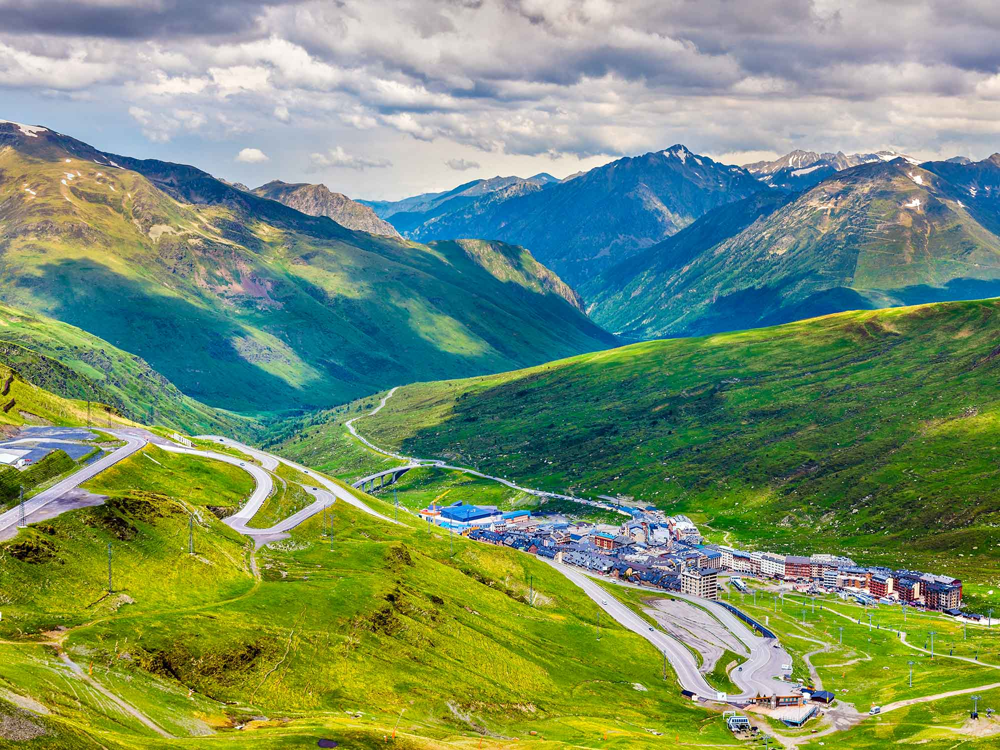
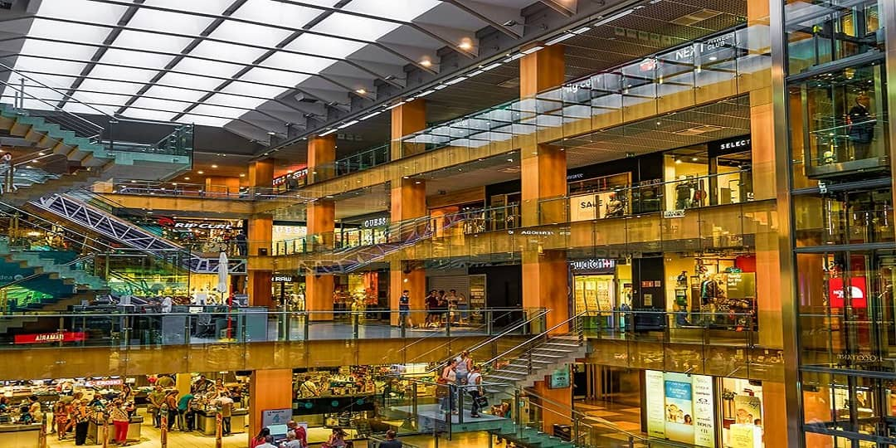

Andorre est une île située au sud-ouest de l'Espagne, à environ 1 000 km de la mer Méditerranée. Elle est connue pour ses plages de sable blanc et ses villes historiques, comme la ville de Andorre-la-Vieille. La capitale de l'île, Andorre-la-Vieille, est connue pour ses musées et ses monuments historiques.

C'est une petite principauté qui reste très connue pour son tourisme commercial. Le coût de la vie est 16,1% moins élevé qu'en France. Tous les prix sont abordables et vous y trouverez goût facilement.
Des villes sont spécialement conçues pour le shopping avec de très grand centre commercial
En conclusion, si vous êtes un passionné de vêtement et de mode foncez à Andorre, vous ne regretterez pas.😉